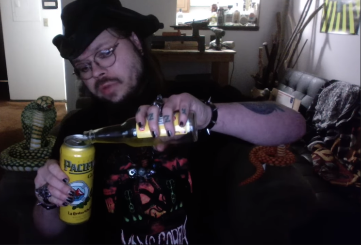

Mustard Cobra

Description:
Here's another drink recipe! It's almost like this guy is an alcoholic mixing whatever
random booze he has laying around.
Wow! This recipe is really short its almost like me and the person who originally wrote this got sick of it after a while
Ingredients:
- 18oz Pacifico Beer
- 6oz Lester Fixins' Musterd Flavored Soda Pop (this is the second time he uses this shit)
Steps
- Take a can of Mustard Soda and hold in one hand
- Take a can of Pacifico Beer and hold in the opposite hand
- Pour the can of mustard soda into the can of Pacifico beer
- Puke :'(